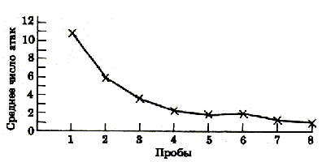

Так как попытки напасть на креветку не приводили к успеху, число атак уменьшалось.
Обучение каракатицы
Биология, изд. Мир,
1990 , том 2
Н.Грин, У.Стаут, Д.Тейлор
Кривая научения

Рис. 16.68. Типичная кривая научения.
( Messenger J. В. , Symp. Zoo. Soc. Lond., 1977 , 38, 347.)
На графике показано число нападений каракатицы на креветку, находящуюся в стеклянном сосуде. Креветку показывали каракатице 8 раз, каждый раз по 3 мин. Так как попытки напасть на креветку не приводили к успеху, число атак уменьшалось по мере того как каракатица "усваивала", что она не может схватить креветку. Приведенная кривая основана на усреднении результатов, полученных на 40 каракатицах.
Этот же график в виде таблицы:
| Номер очередного
3-х минутного опыта |
Среднее число нападений
за 3 минуты. |
| 1 | 11 |
| 2 | 6 |
| 3 | 3.5 |
| 4 | 2.5 |
| 5 | 2 |
| 6 | 2 |
| 7 | 1.5 |
| 8 | 1 |